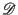
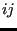

Next: The Nosé-Hoover Chain Up: Molecular Dynamics at Constant Previous: Velocity Rescaling: Isokinetics and
The Andersen Scheme. Perhaps the simplest thermostat which does correctly sample the NVT ensemble is due to Andersen [10]. Here, at each step, some prescribed number of particles is selected, and their momenta (actually, their velocities) are drawn from a Gaussian distribution at the prescribed temperature (otherwise known as the Maxwell-Boltzmann distribution):
The code mdlj_and.c implements the
Andersen thermostat for the
Lennard-Jones fluid. The two relevant parameters are and_T, the setpoint temperature, and and_nu, the rise time. Fig. 24 shows traces of temperature vs time for three MD simulations of the Lennard-Jones fluid with 512 particles at a density of 0.50, with temperature controlled using the Andersen thermostat with various values of collision frequency  . Larger
. Larger  results in longer approach times to the setpoint temperature, but it is also clear that for these values of
results in longer approach times to the setpoint temperature, but it is also clear that for these values of  , the Andersen thermostat acts much more quickly than the Berendsen thermostat. Note also that the relative fluctuations of the temperature reported indicate that canonical statistics are in fact being held.
, the Andersen thermostat acts much more quickly than the Berendsen thermostat. Note also that the relative fluctuations of the temperature reported indicate that canonical statistics are in fact being held.
|
|
Although temperature fluctuations match the canonical ensemble, the Andersen thermostat destroys momentum transport because of the random reassignment of velocities; hence, there is no continuity of momentum in an Andersen LJ fluid, and therefore no proper  or viscosity. Fig. 6.3 in Frenkel & Smit clearly shows that , if measured from an Andersen MD run, is incorrect.
The Langevin thermostat. In the “Langevin” thermostat, at each time step all particles receive a random force and have their velocities lowered using a constant friction. [11] The average magnitude of the random forces and the friction are related in a particular way, which guarantees that the “fluctuation-dissipation” theorem is obeyed, thereby guaranteeing NVT statistics.
In this formalism, the particle- equation of motion is modified:
equation of motion is modified:
| (206) |
The code mdlj_lan.c implements
the Langevin thermostat. The two relevant parameters are lanT, the setpoint temperature, and lan_friction, the friction . The two major elements are a force initialization
at each time step that adds in the random forces, , and
a slight modification to the update equations in the integrator to
include the effect of . Note that the initialization of
forces to zero in the force routine has been removed.
Fig. 25 shows temperature vs time for several MD simulations of a 512-particle LJ fluid at a density of 0.5; the upper plot shows data from runs with  =10, and the lower plot
=10, and the lower plot  =10, each showing four values of . Relative temperature fluctuations indicate weak agreement with canonical statistics that improves for the lower values of
=10, each showing four values of . Relative temperature fluctuations indicate weak agreement with canonical statistics that improves for the lower values of  .
.
|
|
One advantage of the Langevin thermostat (and to a limited extent, the
Andersen thermostat and other stochastic-based thermostats) is that we
can get away with a larger time step than in NVE simulations. At a
density of  = 0.8442 and a mean temperature
= 0.8442 and a mean temperature  = 1.0, an NVE
simulation is unstable for time-steps above about
= 1.0, an NVE
simulation is unstable for time-steps above about  = 0.004.
We can, however, run a Langevin dynamics simulation with a friction
= 1.0 stably with a time-step as large as
= 0.004.
We can, however, run a Langevin dynamics simulation with a friction
= 1.0 stably with a time-step as large as  = 0.01
or even higher. This has proven invaluable in simulations of more
complicated systems that simple liquids, namely linear polymers, which
have very long relaxation times. MD with the Langevin thermostat
is the method of choice for equilibrating samples of liquids of
long bead-spring polymer chains.
= 0.01
or even higher. This has proven invaluable in simulations of more
complicated systems that simple liquids, namely linear polymers, which
have very long relaxation times. MD with the Langevin thermostat
is the method of choice for equilibrating samples of liquids of
long bead-spring polymer chains.
Of course, the drawback of most stochastic thermostats (one exception is discussed next) is that momentum transfer is destroyed. So again, it is unadvisable to use Langeving or Andersen thermostats for runs in which you wish to compute diffusion coefficients. The recommendation stands: use NVE to compute properties, and use thermostats for equilibration only.
The Dissipative Particle Dynamics thermostat. The DPD thermostat [12,13] adds pairwise random and dissipative forces to all particles, and has been shown to preserve momentum transport. Hence, it is the only stochastic thermostat so far that should even be considered for use if one wishes to compute transport properties.
The DPD thermostat is implemented by slight modification of the force routine to add in the pairwise random and dissipative forces. For the  pair, the dissipative force is defined as
| (207) |
| (208) |
The update of velocity uses these new forces:
| (210) | |||
| (211) |
The parameters  and
and  are linked by a fluctuation-dissipation theorem:
are linked by a fluctuation-dissipation theorem:
| (212) |
The cutoff functions are also related:
| (213) |
| (214) |
The code mdlj_dpd.c implements the DPD thermostat
in an MD simulation of the Lennard-Jones liquid. The major changes (compared to
mdlj.c) are to the force routine, which now requires several more arguments, including
particle velocities, and parameters for the thermostat. Inside the pair loop, the
force on each particle is updated by the conservative, dissipative, and random pairwise
force components. The random force is divided by
so that
the velocity Verlet algorithm need not be altered to implement Eq. 209.
The behavior of the DPD thermostat can be assessed in a similar
fashion as was the Berendsen thermostat above.
Here I've run several MD simulations of the LJ fluid at a density of 0.84 with 512 particles for 10,000 steps, with various values of and  . Fig. 26 shows the temperature vs time for these various runs. We see that increased friction leads to faster approach to the setpoint temperature, and that temperature fluctuations seem to conform to canonical statistics pretty well.
. Fig. 26 shows the temperature vs time for these various runs. We see that increased friction leads to faster approach to the setpoint temperature, and that temperature fluctuations seem to conform to canonical statistics pretty well.
|
|